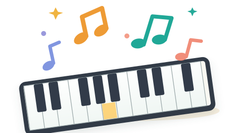

Every note is a new discovery.
Listen, find the right key, and play along on your own mini piano. The 25 keys match the physical toy piano: F3 on the left, F5 on the right.

Ready to make music?
Find the first F key on your keyboard.
Listen to your lesson
Choose a lesson, then tap Read instructions to listen.
Narration is optional and starts only when tapped. The microphone still shows levels, but lesson scoring pauses while the voice is speaking and briefly afterward. Voice selection depends on the device.
Your interactive toy piano
☝️ On a phone or tablet, tap a key to play or swipe horizontally to explore all 25 keys. For microphone detection, press Start listening and grant permission.
♪ Piano reference check (optional)
If your toy keyboard seems consistently sharp or flat, check its Transpose setting first if available. For a measured comparison, start the mic and capture F3 (leftmost key), then C4. Hold each key for about 2 seconds. This does not change the piano's tuning.
Congratulations! 🎉
You finished the lesson. Here is your score and progress summary.
Take it one note at a time.
That’s the next note in your lesson.
The microphone tries to hear your note. You can also tap an on-screen key.
Each correct note plays a success chime and moves you closer to the end.
This is a pitch-recognition experiment, not a grading system. Background noise or overlapping notes can confuse the microphone.
See your piano setup
Preview only. No finger tracking, recording, uploads or visual analysis in Phase 2A.